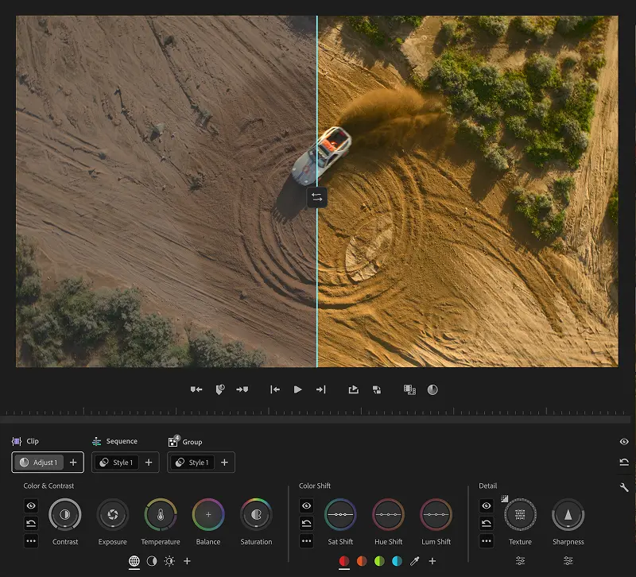

Modern Post
in PremiereColor Mode + AI-Assisted Post-Production
Live Online Training

September 29–30, 2026
Premiere’s new Color Mode + AI workflows, taught live by Adobe experts.
From $99/day · $149 for both days

Designed for an International Audience
Every session is captioned live, and recordings can be dubbed into your language on request.
Join Live from Anywhere
Two interactive training days
Real-Time Captions
Built into every live session
Dubbing in 7 Languages · on request
On request with recordings
180-Day Replay · your sessions
Your sessions, on your schedule
Global Access
Join live from anywhere.
Watch back in your language.
Real-time captions during every session, with dubbed recordings available on request and 180-day replay access.
LiveReal-time captions
Every Zoom sessionRecordings7 dubbed languages
Available on requestReplay180-day access
Watch on your scheduleRecording
Languages🇺🇸English🇪🇸Español🇫🇷Français🇩🇪Deutsch🇯🇵日本語🇵🇹Português🇮🇹Italiano
Languages🇺🇸English🇪🇸Español🇫🇷Français🇩🇪Deutsch🇯🇵日本語🇵🇹Português🇮🇹Italiano